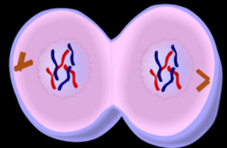

Interphase
- 1. G1 = 1st Gap
- - Cell performs "everyday job"
- - Cell grows
- 2. S = DNA Synthesis
- - Copies chromosomes
- 3. G2 = 2nd Gap
- - Prepares for division
- - Cell grows more
-
● Cell spends most of its time
in this phase.
-
● Nucleolus and nuclear envelope
are distinct.
-
● Chromosomes are in the form
of threadlike chromatin.
Prophase
-
Chromatin condenses into visible chromosomes.
-
Nuclear envelope and nucleolus dissapear.
-
Centrioles move towards poles.
-
Spindle fibers start to form.
Anaphase
-
Sister chromatids split apart at centromere.
-
Each chromatid is now a separate chromosome.
-
Chromosomes moves towards poles.
Telophase
-
Chromosomes begin to untangle and form chromatin.
-
Nuclear envelope reforms and nucleolus reappears.
-
Spindles break apart.
-
Cell begins to squeeze in the middle.

Cytokinesis
-
Complete division of the cytoplasm forming two new cells.
-
Differs in plant and animal cells.
-
Cell plate forms midway between the two new nuclei.
-
Cell membrane moves inward until the cytoplasm is pinched into two nearly equal parts.